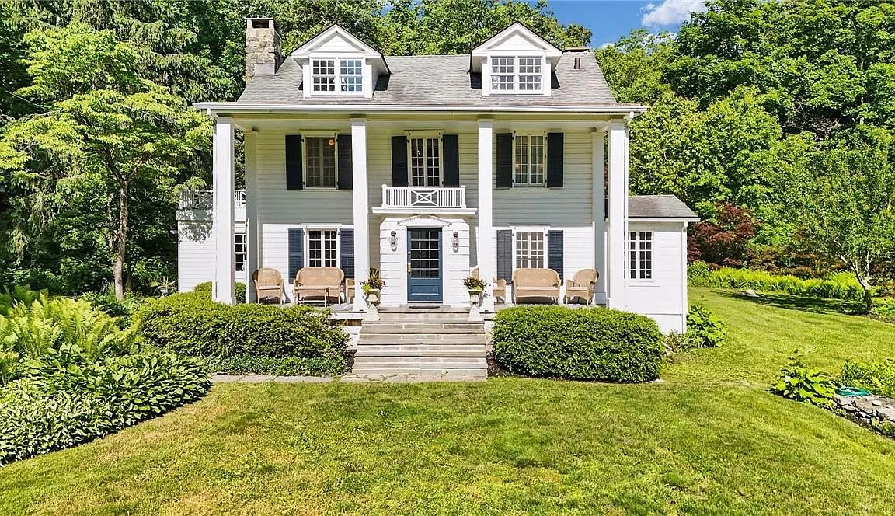
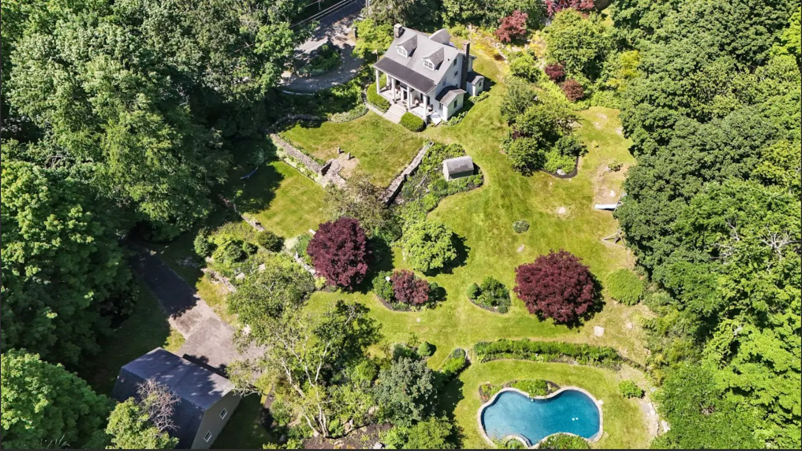
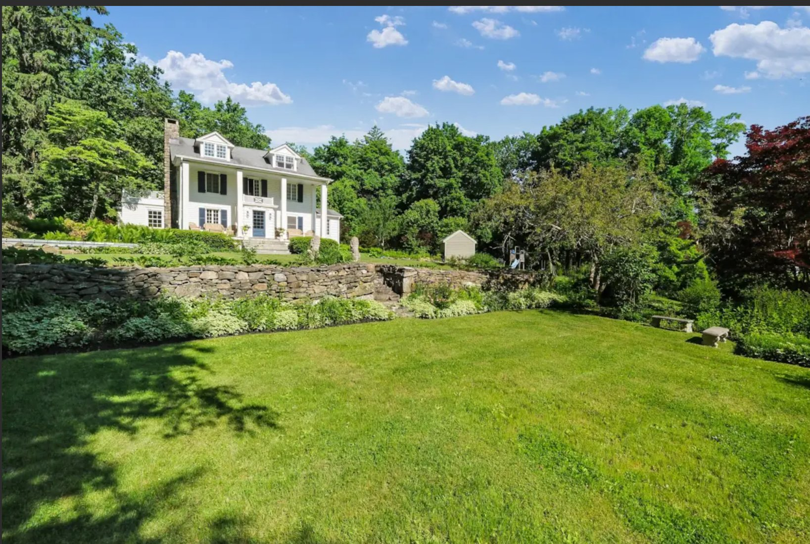

The Hammarskjöld House
From Lot 8 of the Philipse Patent through the Gay family of Foggintown to the country home that the United Nations rented for Dag Hammarskjöld from 1953 until his death in 1961.
I. A House, a Plaque, and a Secretary-General
On Foggintown Road, two miles north of Brewster village, a small cast metal plaque is set into the fieldstone wall in front of a white-clapboard Greek Revival farmhouse. The plaque was dedicated by the Southeast Museum Association on October 24, 1973 — United Nations Day. Its inscription is brief:
Here, Dag Hammarskjold U.N. Secretary-General enjoyed seclusion until his death in 1961.
— Southeast Museum Association, 1973
What the plaque commemorates is not, on its face, a moment of high diplomacy. There were no UN treaties signed here. There is no memorial garden, no preserved study, no museum. The house is now and has always been a private residence. What happened here, between 1953 and 1961, was something quieter: the second Secretary-General of the United Nations, in the most intense years of his tenure, came up from his Manhattan apartment most weekends to a small Putnam County farmhouse, rented from a Brewster widow named Olga Freeman, and was let alone.
That is the local story this research piece tells. It is bracketed by a much older one: a Philipse-Patent tenancy that began before Hammarskjöld’s great-grandparents were born, and a Gay-family farm that gave the surrounding crossroads its alternate name. The house is a private residence today, with current owners whose names we do not publish; the property history that follows traces only the older record up to its mid-twentieth-century transition.
Foggintown Road, Town of Southeast, Putnam County. Originally in Lot 8 of the Philipse Patent — leased to tenant farmers until 1811, when the Philipses began selling fee title. A 95-acre Gay-family farm by 1821 under Abner Gay, son of the tenant Daniel Gay. Greek Revival farmhouse said by real estate records to date to c. 1790. Owned by Olga Freeman by 1953, when it was rented to the United Nations for Hammarskjöld’s use. Sold to Lowell and Edith Roberts in 1963, and through several private hands since.

II. The Philipse Patent and Foggintown
The land on which the house stands lay, for most of the eighteenth century, in Lot 8 of the Philipse Patent, the colonial tract granted by the British Crown that covered most of present-day Putnam County. The Philipse family did not generally sell title under the patent. Instead they leased: tenant farmers cleared and improved the land, paid annual rents, and held no fee. The system held throughout the colonial period and survived the Revolution; the loyalist Philipses had their interests confiscated by the New York Commission of Forfeiture during the war, but the leasehold tenancies on the upland lots continued largely undisturbed. It was only in 1811 that the post-Revolutionary heirs and assigns of the Philipse interest began selling fee title to the leaseholders.
The neighborhood was already known as Foggintown before the Gays arrived. The name appears in Town of Southeast highway documents as early as 1747 — the standard reference for Southeast settlement, W. S. Pelletreau’s History of Putnam County, New York (1886), preserves this. The origin of the name “Foggintown” itself is not well established in the sources we have consulted; it appears to derive from an early settler family of that name, but the trail predates the systematic record.
The standard reference for early Town of Southeast geography is Pelletreau 1886, Chapter II.
III. The Gay Family and the Gayville Crossroads
Daniel Gay had been a tenant on this stretch of Foggintown Road since at least 1810 — that is, in the final year before the Philipse-interest sales began. He was, in other words, one of the tenant farmers for whom the 1811 transition mattered most: a man who had improved a piece of land for years without owning it, and who now had the option of buying. Daniel apparently exercised that option (or his son did, in his name or after him); by 1821, the next generation, Abner Gay, had assembled a 95-acre farm here. The Gay family became dominant enough along this stretch of road that the immediate vicinity was locally remembered, for a time, as Gayville. The older place-name Foggintown eventually prevailed, but the Gay-family hold on the surrounding farms ran through generations.
A family tradition, recorded in a 1976 newspaper tribute to the Gays, holds that Daniel Gay (the eighteenth-century tenant ancestor) fought with the Dutchess County Militia at the Battle of Bunker Hill in 1775. We have not independently verified this claim. Pelletreau 1886, who treats the Southeast Revolutionary record carefully and at length, does not mention it. The Daughters of the American Revolution database is another standard place to check this kind of family-tradition Revolutionary service claim; we have not yet done so. Until the claim is corroborated, it should be treated as family tradition rather than established fact.
Whether Daniel Gay served at Bunker Hill, and whether he is the same Daniel Gay who appears on the Foggintown Road tenancy by 1810, is unverified. The DAR Patriot Index and the New York Comptroller’s Revolutionary muster rolls are the next places to look.
IV. The House and Its Build Date
The standing house is said to date to around 1790. This is the date repeated in real estate records and in local-history accounts. It is not, however, attested by any primary deed or building record we have located. The 1790 date may be approximately correct — the columned portico in the Greek Revival manner is plainly a later overlay on an older farmhouse core, and the core itself reads as late-eighteenth-century in proportion and detail — but the specific figure is unconfirmed.
The Greek Revival portico is the easiest of the additions to place: the style was at its peak in the Northeast roughly 1820–1860, and the columned center-entry treatment, the pediment, and the small second-story balcony above the front door all appear to be later elaborations, stylistically consistent with the 1840s or 1850s. The two roof dormers, with their multi-pane sash, likewise appear to belong to this nineteenth-century campaign of improvement rather than to the original construction. These are architectural readings rather than documented dates; what survives of the late-eighteenth-century house is largely the frame, the chimney mass, and the overall footprint — visible in the gable proportions behind the portico.

- The c. 1790 build date is from real estate records; no primary deed, building contract, or estate inventory has been located that pins the original construction to a specific year.
- The portico and dormer additions are unaccompanied by surviving documentation; estate inventories or insurance maps from the mid-nineteenth century could establish their dates more precisely.
- The full deed chain from the 1811 Philipse-interest sale through the early-twentieth-century New York City owners has not been systematically traced for this narrative.
V. From the Gays to Mrs. Freeman
The farm passed through Gay descendants for generations after Abner. By the early twentieth century the property had left the Gay family and moved through a series of New York City lawyers and editors — the kind of weekend-owner pattern that characterizes much of Putnam County’s housing history in the 1900s and 1910s, as fast Hudson Line trains made the upper Croton watershed reachable from Manhattan for weekend use. The specific names and dates in this chain we have not yet retraced from the deed record.
By 1953 the property was owned by Mrs. Olga Freeman of Brewster. Mrs. Freeman, a widow, did not live in the house. She owned it, and she rented it — or more precisely, in the spring of 1953, she entered into a lease arrangement with the United Nations for the use of the house by Dag Hammarskjöld, who had just taken office as Secretary-General on April 10 of that year.
VI. Hammarskjöld’s Weekend House, 1953–1961
Dag Hjalmar Agne Carl Hammarskjöld (1905–1961) had no obvious reason to know Brewster. He was Swedish by birth and Manhattan-based by office. Foggintown Road lay an hour and change north of the city — far enough from the UN press corps to be private, near enough to be reachable on short notice.
What is known of his use of the house is largely indirect. Hammarskjöld was an intensely private man whose interior life is preserved in the contemplative journal published posthumously in 1963 as Vägmärken (in English in 1964 as Markings) — reflections on faith, vocation, and the burden of office that read as if written precisely somewhere like Foggintown Road, though Hammarskjöld names no specific places. He hosted no public events here. The plaque’s phrase — that he “enjoyed seclusion” — appears to be the entire local-memory thesis. The house was where he stopped being the Secretary-General for a day or two at a time.
The years that the house spanned for him were not quiet ones at the UN. His tenure as Secretary-General overlapped with the 1956 Suez Crisis, during which he organized the first United Nations peacekeeping force; the 1958 Lebanon crisis; and the 1960–1961 Congo Crisis, which would eventually carry him to the Ndola crash. The Foggintown house is the place where, presumably, he returned to between those crises.
Hammarskjöld died on the night of September 17–18, 1961, when the DC-6 carrying him to ceasefire negotiations during the Congo Crisis crashed in dense bush near Ndola in the British colony of Northern Rhodesia (today Zambia). All sixteen aboard were killed. The Foggintown house had been his retreat across most of his eight years in office. He never returned.
VII. The 1973 Dedication
Twelve years passed between Hammarskjöld’s death and the dedication of the plaque. In that interval, Mrs. Freeman had sold the house: in 1963, she conveyed it to Lowell and Edith Roberts, who took title and moved in as private owners. The house was no longer Hammarskjöld’s by the time the Southeast Museum Association proposed the marker. The Roberts family agreed to its placement on the stone wall fronting the road.
The dedication ceremony, on October 24, 1973 — United Nations Day, drew a notable list of speakers to Foggintown Road:
- · Mrs. Olga Freeman — the widow who had rented the house to the United Nations for Hammarskjöld’s use.
- · Knut Hammarskjöld — the late Secretary-General’s nephew, then the Director General of the International Air Transport Association (IATA), 1966–1984.
- · H.E. Olof Rydbeck — Permanent Representative of Sweden to the United Nations, who served in that role from 1971 to 1981.
- · Brian Urquhart — then a UN Assistant Secretary-General and a longtime senior Hammarskjöld colleague; later the author of the standard 1972 biography Hammarskjold.
The choice of UN Day was deliberate: October 24 is the anniversary of the date in 1945 when the UN Charter took force, and the day the United Nations celebrates itself. Several hundred members of the public attended — an unusual gathering for a small road in Putnam County. The plaque has been on the wall ever since.
VIII. Since 1963
The Roberts family held the house for some years and sold on; the property has changed hands several times in the decades since. Each subsequent owner has retained the plaque on the stone wall. The current owners are not named on this page in keeping with the project’s practice of not publishing the names of living residents.
What remains, in addition to the plaque, is the house itself — still standing, still a private home, recognizably the same Greek Revival farmhouse that Hammarskjöld came up to on weekends in the 1950s. The road is paved now where it might have been gravel then. Foggintown Road remains, as it has been since at least 1747, a back road.
- Full deed chain through the eighteenth and nineteenth centuries — from the 1811 Philipse-interest sale through the Gay generations to the early-twentieth-century New York City owners — has not been systematically traced for this narrative.
- Daniel Gay’s Revolutionary service (Bunker Hill family tradition) is unverified against the DAR Patriot Index or the New York Comptroller’s Revolutionary muster rolls.
- The c. 1790 build date for the house rests on real estate records, not on a primary deed or building record.
- The lease arrangement between Mrs. Olga Freeman and the United Nations — its specific terms, dates, and rental amount — has not been examined; the UN archives in New York would be the place to look.
- The full text of the October 24, 1973 dedication ceremony program, including the speakers’ remarks, has not been located; the Southeast Museum Association archive in Brewster is the obvious place to start.
- The Brewster Standard for the week of October 24–31, 1973 would almost certainly have covered the dedication ceremony in detail. This has not been consulted.
- The intermediary owners between the Gay descendants and Olga Freeman — the “New York City lawyers and editors” of the early twentieth century — have not been individually identified.
Sources
- On-site photographs of the Southeast Museum Association plaque (1973) on the stone wall in front of the house on Foggintown Road.
- The plaque is treated as the principal local-memory document on Hammarskjöld’s tenancy. Its phrasing (“enjoyed seclusion until his death in 1961”) is the foundation for the local narrative.
- Pelletreau, William S. History of Putnam County, New York. Philadelphia: W. W. Preston & Co., 1886 — for the Lot 8 / Philipse Patent designation, the 1747 first appearance of the Foggintown place-name in Town of Southeast highway documents, and the Gay-family settlement record.
- 1976 newspaper tribute to the Gay family — primary source for the Daniel Gay / Bunker Hill family tradition. The tradition is presented as unverified.
- Real estate records — secondary source for the c. 1790 build date. No primary deed or building record has been located for the original construction.
- Project research notes on the property (compiled from period deed records and a prior research session). Specific deed-by-deed citations have not yet been pulled into this narrative; the full deed chain is open research.
- Dag Hammarskjöld, Wikipedia — for biographical material on Hammarskjöld’s tenure as Secretary-General, the Suez Crisis (1956), the Lebanon crisis (1958), and the Congo Crisis (1960–1961).
- 1961 Ndola United Nations DC-6 crash, Wikipedia — for the September 17–18, 1961 crash and the 1962 Rhodesian and UN inquiries.
- United Nations reports of the Eminent Person (Mohamed Chande Othman) on the investigation into Hammarskjöld’s death, through the October 2024 report, and the Secretary-General’s September 2025 statement continuing the inquiry (un.org; press.un.org). The current UN assessment is that an external attack or threat “remains plausible”; the case is officially open.
- United Nations: “Dag Hammarskjöld” (un.org/dag-hammarskjold) — official UN biographical page.
- Brian Urquhart, Hammarskjold (New York: Knopf, 1972) — the standard biography by a senior UN colleague who attended the 1973 plaque dedication. Not consulted for this draft; the obvious next step for a deeper Hammarskjöld treatment.
- Roger Lipsey, Hammarskjöld: A Life (University of Michigan Press, 2013) — the modern full-length biography, drawing on archival and personal-correspondence research. Not consulted for this draft.
- Dag Hammarskjöld, Markings (English translation, 1964) — the posthumously published reflections; cited generally for the character of Hammarskjöld’s interior life.
- The names and titles of the four speakers at the October 24, 1973 ceremony (Olga Freeman, Knut Hammarskjöld, Olof Rydbeck, Brian Urquhart) come from project research on the plaque, which in turn appears to draw on a Town of Southeast Historian summary. The original 1973 ceremony program and the Brewster Standard coverage of the dedication have not been independently consulted for this draft.
Research by Rob G. · May 2026 · A Property History